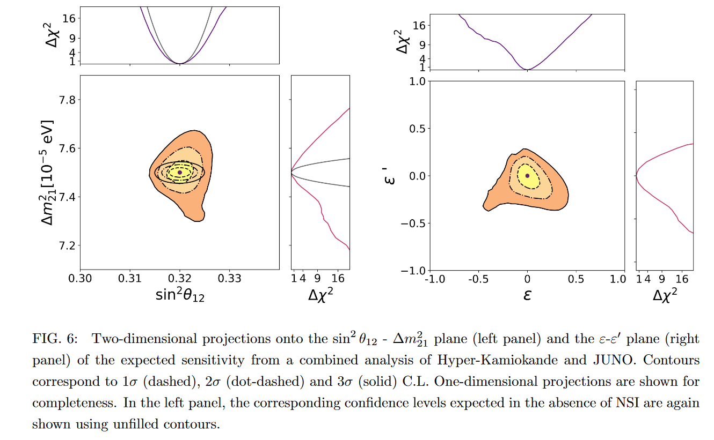
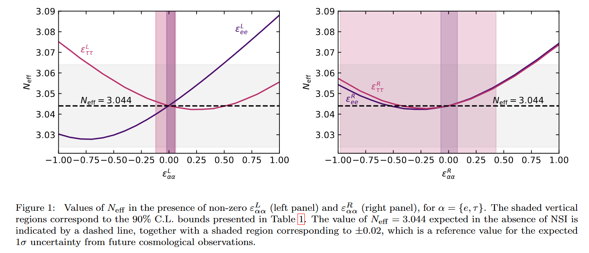
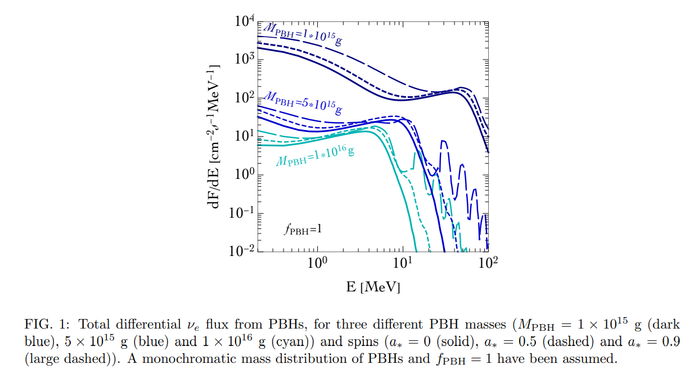
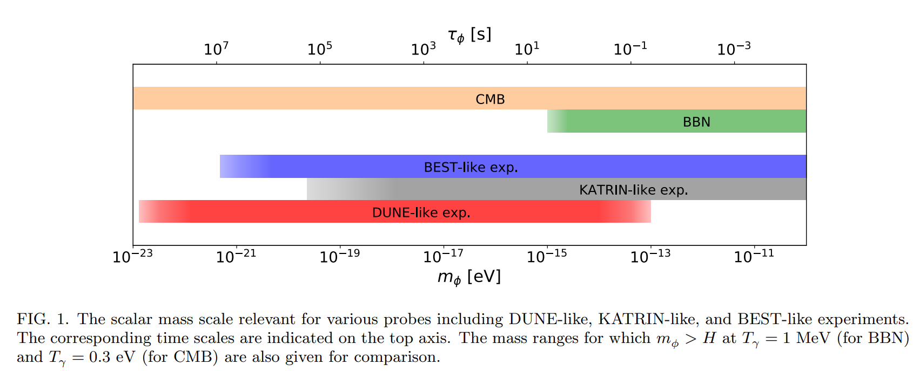

So far, my research has been developed following three key directions related to neutrino physics. The first one is the determination of neutrino masses and mixings from the joint analysis of data from different neutrino oscillation experiments, beta decay measurements, neutrinoless double beta decay searches and cosmological observations. The second line of research consists of the study of other neutrino properties including non-standard interactions with matter or electromagnetic properties such as magnetic moments. The third pillar of the research conducted was the search for connections between neutrinos and dark matter, either arising from a direct coupling between both species or the use of neutrino experiments as dark matter detectors.
Flavour oscillations provide conclusive evidence that neutrinos have non-degenerate masses, two of them (at least) different from zero. This is, together with dark matter, the only experimental evidence of physics beyond the Standard Model. Over the years, the quantum phenomenon of neutrino oscillations has been tested in different experimental setups, with neutrinos and antineutrinos from different sources. In recent years, global fits to neutrino data have allowed the determination of the mixing parameters and the squared mass differences with unprecedented accuracy.
In
More information about the current status of the Global Fit to neutrino oscillation data can be found here, together with the χ2 profiles and 2-D tables with the existing correlations between parameters.
In many extensions of the Standard Model, additional neutrino properties beyond masses and mixing arise. For instance, non-standard interactions (NSI) between neutrinos and other charged fermions. In addition, massive neutrinos are expected to have tiny, yet non-zero, electromagnetic moments. The existence of additional degrees of freedom could give rise to larger, and thus testable, electromagnetic moments.
Neutral current NSI between neutrinos and d-type quarks (or u-type quarks) can be constrained using oscillation data. In particular, in the future, the complementarity of the medium baseline reactor experiment JUNO and the measurement of solar neutrinos at Hyper-Kamiokande will allow constraining non-standard interactions to be around 10% the strength of Standard Model ones. The key point is that this would be possible while having a subpercent determination of the oscillation parameters mainly involved in the solar sector, Δm221 and θ12, as shown in PRD 105 (2022) 3, 035004.
Neutral current NSI between neutrinos and electrons can also be tested in oscillation experiments, as well as from the study of scattering measurements and some observables at e+e- colliders. In PLB 820 (2021) 136508, we explored how these NSI would alter the picture of neutrino decoupling. We also pointed out the potential of future cosmological surveys to constrain them from the determination of the effective number of relativistic species, Neff.
If neutrinos are Majorana, the interaction of their magnetic moments with the magnetic field in the Sun would give rise to the phenomenon of spin-flavour precession. In that case, a small, yet potentially detectable, flux of electron antineutrinos is expected. Analytical calculations in 2207.04516 can be used to derive limits on this scenario and are easy to implement in future searches.
Among the large variety of dark matter candidates, two particular ones can be probed in neutrino experiments. Interestingly, they happen to lie on opposite extremes of the mass spectrum.
Neutrinos can be emitted as Hawking radiation of primordial black holes (PBHs). For a certain PBH mass range, the emitted neutrinos would have energies around MeV or smaller and could be detected in existing neutrino experiments. In JCAP 10 (2021) 051, the sensitivity of DUNE and the proposed experiment THEIA are studied.
Ultralight dark matter (scalars with masses around 10-20eV) could provide a better agreement between small-scale cosmological simulations and observations. In PRD 106 (2022) 3, 033004, we present a cosmology-friendly scenario of neutrino-ultralight dark matter that leads to a testable signature in beta decay experiments. Besides that, oscillation experiments like DUNE can test this type of interaction (see JHEP 01 (2021) 094 ).
